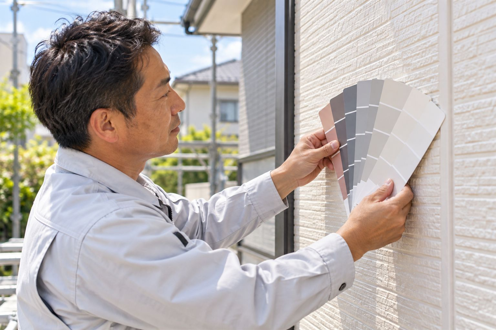
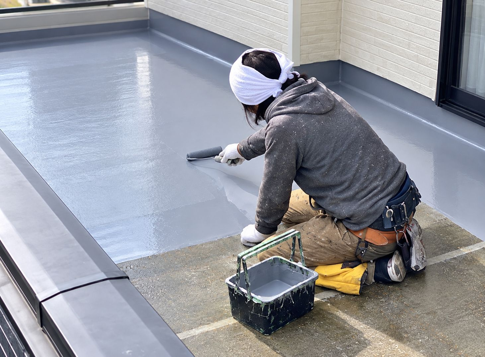

LICENSE
3つの資格が支える、確かな技術
LICENSE 1
一級塗装技能士
受験には7年以上の実務経験が必要で、筆記と実技の両方に合格しなければ取れない国家資格です。合格率は50〜60%ほどと言われています。
LICENSE 2
外壁診断士
設計・施工・管理・メンテナンスまで、外壁全体の知識を持つ技術者の呼び名です。外壁の性能と課題を見極め、最適な方法をご提案します。
LICENSE 3
職業訓練指導員(塗装科)
塗装の技術を「教える」ための免許です。職人は指導員から知識と技術を学び、そのうえで現場に立っています。

DIAGNOSIS
まずは外壁を「診る」ことから
外壁の傷み方は、建物の素材や環境によって一軒ずつ違います。外壁診断士が、ひび割れの深さや目地の状態を確かめて、その家に合った方法を選びます。
八王子市S様邸では、ひび割れが激しかったため、下塗りのパーフェクトフィーラーを通常より1回多い2回塗りにしました。

COLOR
色へのこだわりにも、とことん応えます
「この色にしたい」という思いがあるお客様には、塗料メーカーの特注色でお応えします。カタログにない色でも、まずはご相談ください。

DETAIL
見えないところこそ、手を抜かない
外壁塗装のいちばんの目的は、建物を水から守ること。雨樋やベランダ、目地など、ほかの業者が省きがちな細部まで丁寧に仕上げて、雨漏りや二次被害を防ぎます。
FLOW
ご相談から完成まで
- STEP 1
ご相談
お電話・メールでお気軽に。今の外壁の様子をお聞かせください。
- STEP 2
外壁診断
外壁診断士がお伺いし、ひび割れや劣化の状態を確認します。
- STEP 3
プランのご提案
ご要望と外壁の状態に合わせた、オリジナルプランをご提案します。
- STEP 4
施工
一級塗装技能士が、細かい部分まで丁寧に仕上げます。
- STEP 5
お引き渡し
仕上がりをご一緒に確認して、お引き渡しです。
※工事の流れは、デモ用に一般的な内容で仮作成しています。正式版では村山塗装様の実際の流れに合わせます。
外壁のひび割れ・色あせ、
まずは外壁診断士にご相談ください。
「何をどうすればいいかわからない」という段階でも大丈夫です。
受付 10:00〜19:00